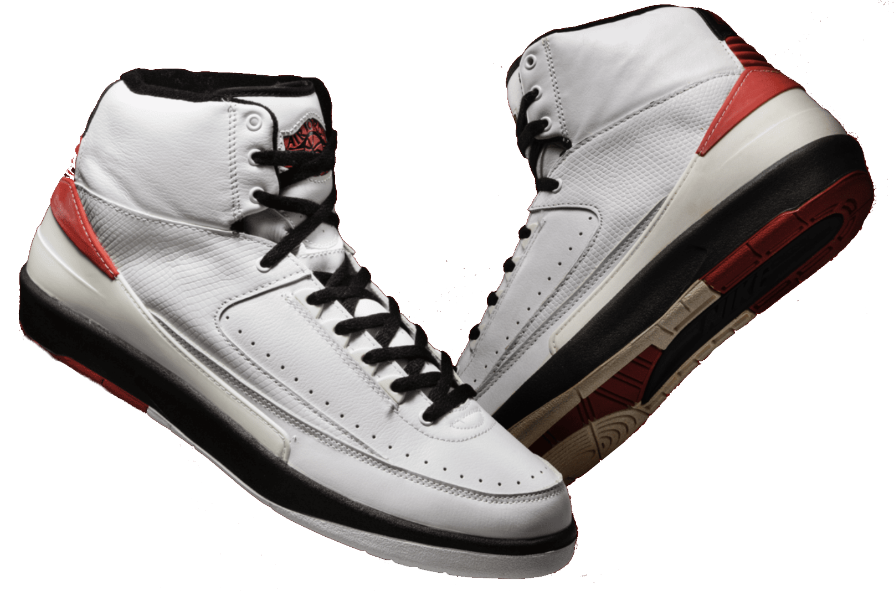
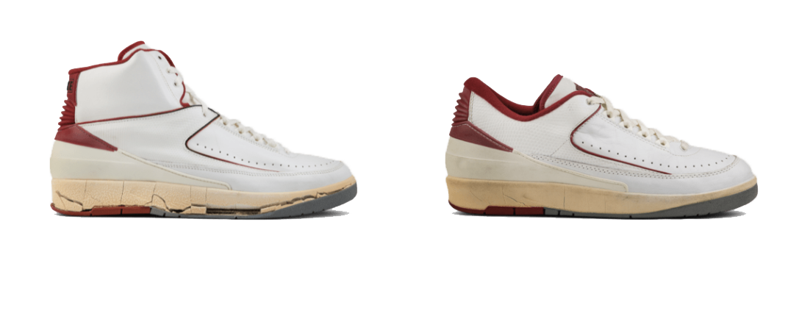
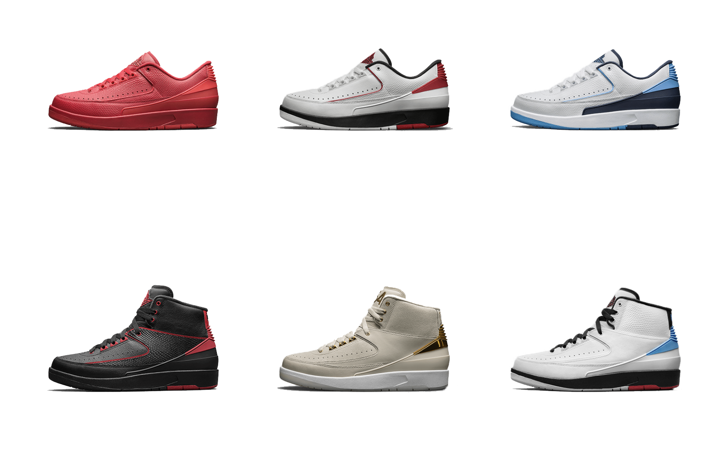
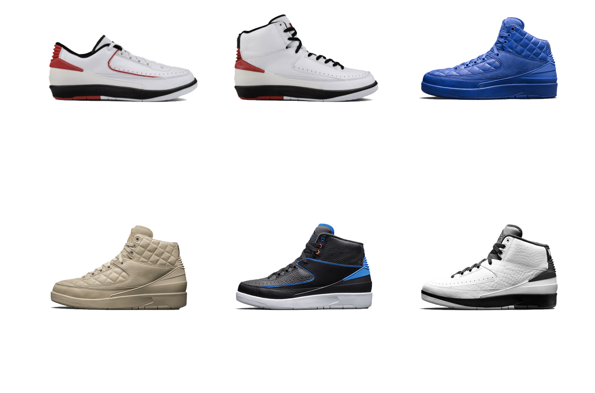

With the introduction of the Air Jordan II comes a new era in footwear. On the heels of Michael Jordan’s masterful entry into the game, and with calculated precision, the AJ II laid the visionary foundation for a long and prosperous footwear dynasty.
Made in Italy, with faux lizard skin, sleek lines and no swoosh, the shoe was an elegant design that added sophistication to MJ’s soaring style. Throughout 1986/1987, Jordan scored a league record 23 points in a row on his way to professional basketball’s second-ever 3,000-point season.



